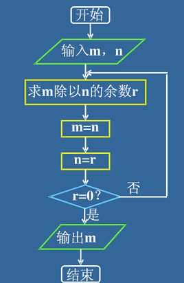

什么是作用域？变量的作用范围
var n=100;
function test(){
var n=99;
console.log(n);
}
console.log(n);
test();
//函数是一个工具，工具的内部构造我们是看不到的，所以在函数里面定义的变量我们在外面是拿不到的
作用域：变量可访问的范围
(起作用的范围)
局部作用域和全局作用域
在一个函数内部定义的变量，称之为局部变量，它的作用范围，只针对该函数内部有效
不是局部的都是全局变量。全局，是在哪都可以用。
在最外层函数的外部，定义的变量，叫做全局变量，访问没有任何限制
（添加在window对象下的变量，叫做全局变量）
找变量的时候，遵循“就近原则”.
计算机删除文件为什么这么快？
因为文件没有删除。
删除的是索引文件。
计算机里，索引无处不在
变量不写var默认全局变量
fucntion test(){
x = 999;
}
X是全局变量
原因：变量的生命提升。浏览器执行到那一行的时候看见使用了一个未定义的变量，于是，帮我们在函数外定义了一下。不建议这么写，尽量不这么写
昨天那道面试题
var n = 10;
function test(){
console.log(n); //undefined
var n = 20;//先在这个函数内声明了变量n，然后在执行到这一行时进行了赋值
console.log(n); //20
}
test();
变量的声明提升原则： 提升至该作用域的最前面
变量的声明提升
浏览器在执行代码之前，会对所有的声明语句，进行提升（把声明代码放到自己作用域的最前面）
然后再按顺序执行代码
函数的参数都是局部变量
var x = 100;
function test(x){
x+=100;
}
test(x);
console.log(x); //100
小时候让我爸讲故事，从来都是： 从前有座山..........
这其实就是递归。
什么是函数的递归？
生活：生活中问自己座位，向前问；我问你多大了：“不告诉你，我同桌比我大2岁 ”，问道最后一个，它没有同桌了，就告诉我了。然后就能推回来。先传递，再归回来。
函数调用函数自身。
function m1(){
m1();
}
无限循环
练习：
递归计算100的阶乘
function fun(n){
if(n==1){ //不加结束条件的报错，堆栈溢出
return 1;
}
return n * fun(n-1);
}
递归计算斐波那契数列
假设有一对兔子，三个月成年，到了第三个月，就可以生下一对小兔子。
问，在第N个月，总共会有多少对兔子？
1 1 2 3 5 8 13 21 34 55 89 144
f(x) = f(x-1) + f(x-2); x > 2
function f(x){
if(x<=2){
return 1;
}
return f(x-1) + f(x-2);
}
递归计算两个数字的最大公约数

function f(m,n){
var r = m%n;
m = n;
n = r;
if(r==0){
return m;
}
return f(m,n);
}
函数跟事件常见事件的结合
构造函数是什么？
var obj = new Number(5);
typeof obj
var s=new String("a");
alert(typeof s);
通过使用new ,出来的都是对象了。
当一个函数使用new 关键字调用时，则称为构造函数。
对象类型是什么？
是一堆信息打包后的产物，多种信息的压缩体。
对象类型的好处在哪？
使得信息的传递更方便快捷
练习：
创建一个对象，表示一个汽车的信息
function car(){
}
var car01 = new car();
car01.logo = "BENZ";
car01.speed = "180km/h";
car01.price = 450000;
car01.size = 5;
创建一个对象，表示一个学生的信息
function student(){
}
var s1 = new student();
s1.name = "小明";
s1.age = 16;
s1.sleep = function(){
console.log("zzzZZZZ....");
}
s1.eat = function(){
}
表示一个对象的行为时，可以使用函数来实现。
编写一个函数，输入n为偶数时，调用函数求1/2+1/4+...+1/n,当输入n为奇数时，调用函数求/1+1/3+...+1/n
function test(n){
var sum=0;
if(n%2==0){
........
}
console.log(sum)
}
var s = test(8);
console.log( s );
test(7);
使用函数完成任意数字阶乘的计算
要求：页面输入任意数字，点击按钮后计算阶乘
综合练习：